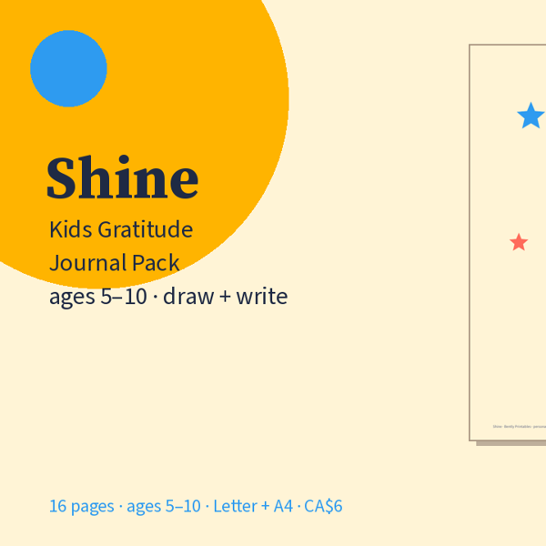

Free kids gratitude page
Draw it. Write it. Shine. (Ages 5–10)

One bright printable page: a big drawing box, handwriting lines, a daily prompt, a kind-thing line, feelings check-in and stars to colour. Five minutes at bedtime.
Download free PDF
What’s on the free page
Want the whole pack? Shine: Kids Gratitude Journal Pack — CA$6: 16 pages — daily draw + write pages, weekly highlight, kind acts tracker, people I'm thankful for, thankful jar, A to Z, Shine Award, blank masters. Letter + A4. Get it on Gumroad →
- Big "I am thankful for…" drawing box
- Early-writer lines with dashed midline
- Prompt + kind thing I did + feelings circles
- Undated · US Letter · Actual size or Fit to page
What’s in the full pack
- Personalised cover + grown-up how-to
- 5 daily draw + write pages (rotating prompts)
- 2 weekly highlight pages
- Kind acts tracker (fridge-friendly)
- People I'm thankful for (draw their faces)
- Thankful jar · Thankful A to Z · Shine Award certificate
- Blank masters to reprint forever
- US Letter and A4 PDFs · home or single classroom
Print tips
Regular paper is fine; colour looks best but B&W works. Staple a week together or keep pages in a folder with crayons nearby.